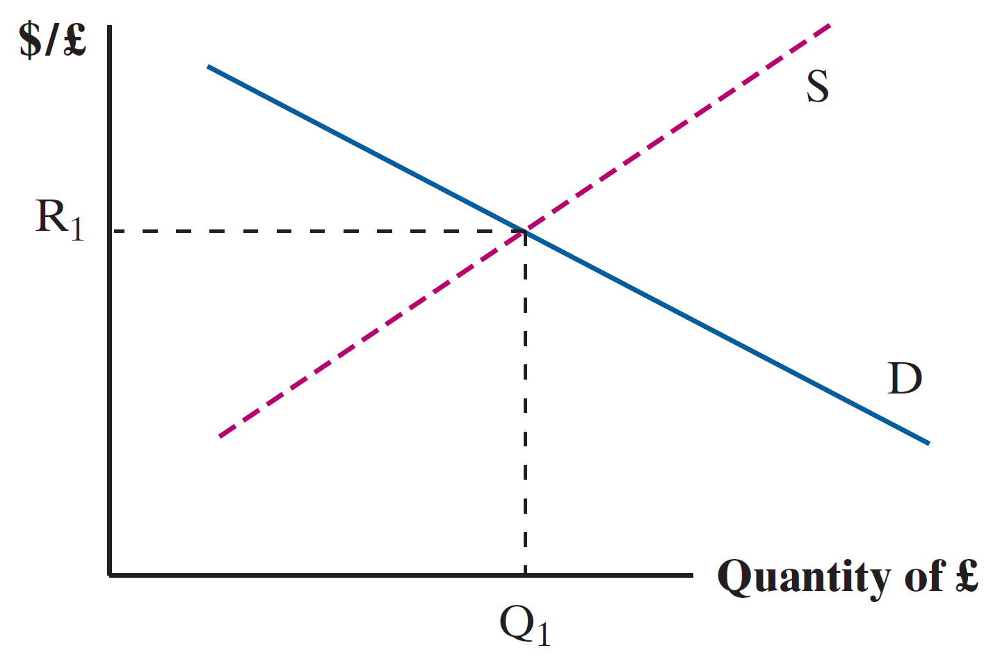

Global Finance | Exchange Rates LR
EC 380 - International Economic Issues
2025
Recap
Previously
National Accounts and CA balance are interconnected
Deficit is not a sign of weakness
A deficit implies borrowing from abroad, and these investments can be very fruitful
Today
- Exchange Rate Adjustments
Basics
Starting From The Start
What is an exchange rate?
This is the exact amount of one currency received in exchange for a single unit of an alternative currency
The US-Costa Rica exchange rate can be expressed as either:
How many US Dollars do I get for each Colon exchanged?
How many Colones do I get for each US Dollar exchanged?
Usually we see the rates that do not account for transaction fees
Basics
We are usually told one unit of this currency is equal to x units of the other
For example, suppose one US dollar can be exchanged for 510.06 colones
\[ \text{USD to Colon, Nominal Exchange Rate} \]
\[ \dfrac{\text{Units of Exchange Currency}}{\text{Units of Held Currency}} = \dfrac{\text{Colones}}{USD} = \dfrac{510.06}{1} \]
Basics
If you are given an exchange rate (1 USD for 510.06 colones), but are asked to find the exchange in the opposite direction you just have to invert the ratio
How many dollars can one colon be exchanged for at this rate?
\[ \text{Colon to USD} = \left(\dfrac{510.06}{1}\right)^{-1} = \dfrac{1}{510.06} \approx 0.002 \; \text{USD} \]
Individual units of colones are not worth very much, nominally, in terms of dollars
We cannot comment on colones being worth little though, since nominal wages in colones might be high
Basics
Key economic events can adjust the value of a currency relative to other items it trades against
When a home currency is able to purchase more units of a foreign currency:
- The home currency is said to have appreciated in value
When instead, the amount of foreign currency that one can buy with a single unit of home currency declines:
- The home currency is said to have depreciated in value
Basics
For example, if the USD:GBP exchange rate changed from 0.87 to 0.85, the units of GBP that each USD can be exchanged for has fallen
This implies that:
USD has depreciated in value, relative to the GBP \(\Rightarrow\) USD \(\downarrow\)
GBP has appreciated in value, relative to the USD \(\Rightarrow\) GBP \(\uparrow\)
Consider how you would calculate the GBP:USD exchange rate and the movements from there as well
Currency Exchanges
Currency Exchanges
All of the work on globalization and interconnectedness begs the question:
Why hold other currencies?
We will argue there are three reasons
1) Enable trade and investment purposes
Traders (importers and exporters) and investors routinely transact in foreign currencies, either receiving or making payments in another country’s currency.
Tourists are included in this category because they have to participate in foreign exchange in order to buy foreign goods and services
Currency Exchanges
All of the work on globalization and interconnectedness begs the question:
Why hold other currencies? We will argue there are three reasons
2) Interest Rate Arbitrage
Arbitrage conveys the idea of buying something where it is relatively cheap and selling it where it is relatively expensive
Arbitrageurs borrow money where interest rates are relatively low and lend it where rates are relatively high
This keeps interest rates from diverging too far and also constitutes one of the primary linkages between national economies
Currency Exchanges
All of the work on globalization and interconnectedness begs the question:
Why hold other currencies? We will argue there are three reasons
3) Speculative Action
Speculators are businesses that buy or sell a currency because they expect its value to rise or fall
They have no need for foreign exchange to buy goods/services or financial assets; rather, they hope to realize profits or avoid losses through correctly anticipating changes in a currency’s market value
If speculators view currency as overvalued, they will sell it and drive down its value.
If they guess wrong, however, they can lose a lot of money
Currency Speculation
This is a point of contention
Not everyone agrees that currencies should be traded speculatively, due to panics these actions can trigger en-masse
Speculation against currency can be destabilizing and sometimes lead to grossly over- or under-valued currency which is a major problem for that country
Currency Exchanges
There are three main participants in foreign currency markets:
Retail Customers:
Includes any firms/individuals that hold foreign exchange to engage in purchases, to adjust their portfolios, or to profit from expected future currency movements
Usually buy and sell through a commercial bank
Currency Exchanges
There are three main participants in foreign currency markets:
- Retail Customers
Commercial Banks:
Hold inventories of foreign currencies as part of services offered to customers. Usually have relationship with several foreign banks where they hold their balances of foreign currencies
When a surplus accumulates or a shortage of funds develops, the banks trade with each other to adjust their holdings
Not very common for US banks to trade currency with foreign banks, they tend to use foreign exchange brokers
Currency Exchanges
There are three main participants in foreign currency markets:
Retail Customers
Commercial Banks
Foreign Exchange Brokers:
Middlemen between buyers and sellers that do not usually hold foreign exchange
Brokers can also serve as agents for central banks
Foreign Exchange Brokers
Here’s how it works:
- An individual or firm that needs foreign exchange calls its bank
- The bank quotes a price at which it will sell the currency
- The price is based on either:
- Bank having an account with the bank in the foreign country where currency is used
- Rate from foreign exchange broker
- Broker keeps track of buyers and sellers of currencies and acts as deal maker
Foreign Exchange Market
Exchange Rate Risk
Multinational firms face risks in terms of market performance and value of revenue, given any degree of exchange rate volatility
Contracts defined in nominal foreign currency amounts face an uncertainty regarding how much these costs will scale or deflate reaching a payment date
The market is extraordinarily good at finding ways to mitigate risk, when possible
Exchange Rate Risk
The markets’s answer: Forward Exchange Rates
The forward exchange rate sets the price of currency that will be delivered in the future and these transactions take place on the forward market
Spot market represents any buying and selling taking place in the present
Effects of \(\Delta\) Supply and \(\Delta\) Demand of Foreign Currency
Let’s take the market for GBP
Increased Demand for GBP
Raises its price
- It appreciates
Increased Supply for GBP
Lowers its price
- It depreciates
Under a fixed exchange rate system, values of USD is held constant through actions of the Central Bank that counteract market forces
Supply and demand analysis is a useful tool for understanding the pressures on a currency regardless of the type of exchange rate system adopted
We will begin with the assumption that exchange rates are completely flexible
FX Market: Flexible
FX Market: Flexible

FX Market: Flexible

FX Market: Long Run
In the extreme case, long-run exchange rates should see all arbitrage opportunities eliminated
This will lead to bids for currencies playing out until the purchasing power of a specific amount of a given Home Currency will be equal to the purchasing power of its foreign currency exchanged when spent abroad
This concept of equal purchasing power internationally for the same basket of goods is called purchasing power parity (PPP)
In the short-run, differences in purchasing power for the same bundle of goods exist
Purchasing Power Parity Example
PPP Example
Suppose a bag of goods costs 1000 USD and 800 GBP
According to PPP, the exchange rate is $1.25 dollars to the pound
Imagine that GBP:USD is $2.
Goods priced at 800 GBP in UK sell for 500 GBP if imported from the US and paid for in USD
This presents an Arbitrage Opportunity
- Brits begin exchanging GBP for USD
- Demand increases for USD (Appreciation)
- New equilibrium settles where purchasing power parity is achieved
PPP Example
An unrealistic assumption that we will make (consider this a caveat)
- Assume that goods flow without cost across international borders and that all goods and services can be traded
In reality, there are transportation costs involved with moving goods. And some goods and services are not able to be traded
- Bank fees for a currency broker when buying the needed pounds
- Some of the goods and services are non-tradable, arbitrage is not possible
Also, few nations have eliminated all their barriers to entry of foreign goods and services
PPP in the Long-Run
Evidence shows that PPP exerts its influence over exchange rates only in the long-run
Over time we have:
- Lower transport costs
- Minimized import rules
- Minimized regulations
Summary
Recap
Exchange rates determine price of foreign goods
Numerous reasons to hold foreign reserves
Shifts in exchange rates often mirror changes in demand and supply of currencies
PPP holds only in the Long-Run
Next
- Short-run & Medium-Run Exchange Rates
- Parity Relationships
EC380, Lecture 09 | Exchange Rates LR